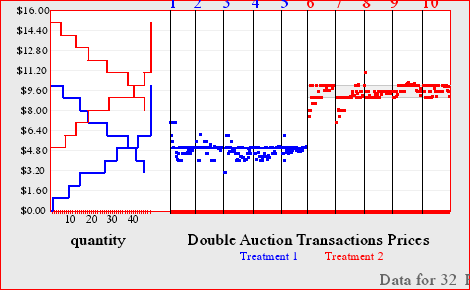
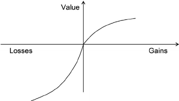
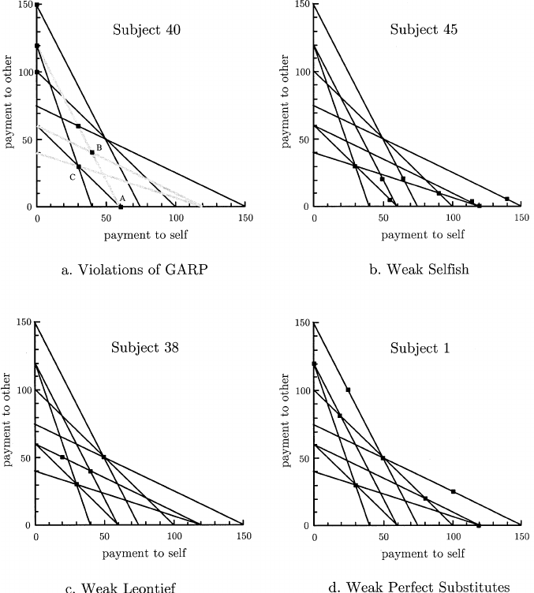

La Economía Experimental
Contenido
-
Una introducción breve a la economía experimental y contribuciones
-
Cómo funciona un laboratorio de economía (aspectos prácticos)
-
Una aplicación
1. Economía Experimental
Experimentos: qué son
Procedimiento y medición realizados con la finalidad de refutar una hipótesis (o comparar desempeño).
-
Control experimental: realizar el "mismo" procedimiento con sólo una diferencia (la de interés).
- brinda la mejor oportunidad de rechazar la hipótesis.
- permite hablar de atribución / causa-efecto.
-
Reproducibilidad: generar los resultados consistentes si se repite el procedimiento.
- clave en el proceso de generación y adopción de nuevas teorías (o extensiones de las actuales).
Experimentos en economía (?)
“One possible way of figuring out economic laws (...) is by controlled experiments. (... however) Economists (...) cannot perform the controlled experiments of chemists or biologists because they cannot easily control other important factors. Like astronomers or meteorologists, they generally must be content largely to observe.” (Samuelson and Nordhaus, 1985)
Experimentos en economía: sí
Pero...
-
La astronomía (por ejemplo) sí se sirve del método experimental por medio de otras ciencias básicas.
-
La imposibilidad de experimentar con cuerpos celestes (hasta hoy), no aplica a muchos objetos en la economía (e.g. el consumidor, el mercado, incluso una micro-economía).
-
...entonces, sí podemos experimentar en economía; pero por qué lo haríamos?
Experimentos en economía: por qué
-
Una forma adicional de refutar teorías económicas (como mínimo).
-
El "control experimental" nos permite poner el foco en comportamientos fundamentales en una forma que los datos observacionales usualmente no pueden; y así generar una "ciencia básica" de la economía.
-
Más allá de la teoría: diseño de políticas, mecanismos y mercados.
-
...
Economía experimental (Lab): inicios
- Chamberlain, 1948; Allais, 1953;
-
Nobel para Vernon Smith "por el uso de experimentos de laboratorio como una herramienta en el análisis económico empírico (...) en el estudio de diferentes mecanismos de mercado".
-
(E. conductual) Daniel Kahneman "por la introducción de las ideas de la investigación psicológica en la economía, en particular con respecto a las decisiones bajo incertidumbre".
Economía experimental: en la práctica
Ernst Fehr:
"La economía experimental es esencialmente un método de investigación empírica. Si tiene éxito, (...) se convertirá en un instrumento estándar en la caja de herramientas del economista."
EE contribuciones (I): instituciones de mercado
-
Smith, 1962, usa la subasta doble (CDA) y encuentra que alcanza alta eficiencia en unos pocos períodos, y con sólo unos pocos compradores y vendedores.
-
Plott y Smith, 1978, comparan dos instituciones de mercado, CDA y posted-offer, y encuentran que CDA es más eficiente.
-
En general el equilibrio competitivo organiza los datos, pese a que no hay subastador que evite el intercambio a precios de desequilibrio.
- los precios están en el intervalo previsto.
- La eficiencia (TS observado / TS potencial) es alto.
- exclusión del mercado es mayormente eficiente
Smith's double auction

EE contribuciones (I): instituciones de mercado
-
Cientos (en realidad, miles) de experimentos para estudiar mecanismos de mercado se han realizado después de Smith et al.
-
Agregación de información: Plott y Sunder, 1982, 1988; Forsythe y Lundholm, 1990; Copeland y Friedman, 1987, 1991.
-
Expectativas en convergencia al equilibrio: Forsythe et al, 1982, 1984; Friedman et al, 1984; Anderson et al, 1991.
-
Burbujas de precios: Smith et al, 1988; Noussair y Tucker, 2006.
-
...más allá de mecanismos de precios: Auctions, matching mechanisms, etc., etc. "... experimental and computational economics are natural complements to game theory in the work of design..." (Roth, 2002).
EE contribuciones (II): en economía conductual
-
La usuaria más importante de EE ha sido la economía conductual. Dos tópicos importantes:
-
Riesgo: prospect theory, aversión a la pérdida y efecto dotación (Tversky and Kahneman, 1979; Kahneman, Knetsch, Thaler, 1990;...)
-
Preferencias "sociales": aversión a la desigualdad, altruismo, confianza (Fehr & Schmidt, 1999; Charness & Rabin, 2001, Andreoni and Miller, 2002; Choi et al, 2006; ...)
-
Otros: elección inter-temporal, emociones, ...
-
EE contribuciones (II): en economía conductual

EE contribuciones (II): en economía conductual

Críticas a la economía experimental
Objeciones comunes (basado en Levit y List, 2007):
- Mucho escrutinio que afecta el comportamiento.
- Omisión o error del los aspectos contextuales.
- Tamaños muestrales reducidos.
- Existe la posibilidad de sesgo de auto-selección con los participantes voluntarios.
- (in)validez externa.
2. Aspectos prácticos del laboratorio de EE

Componentes de un experimento
-
Ambiente:
- Preferencias, tecnologías, dotación inicial
-
Institución (Reglas del juego):
- Acciones factibles
- Secuencia de acciones
- Condiciones de información
- Formación de pagos
-
Framing:
- Instrucciones/interface.
Características de un experimento
-
A diferencia de los experimentos en otras disciplinas (e.g. psicología), en economía:
-
No se usa engaño: cambian las creencias en futuras interacciones, genera ruido.
-
Se proveen incentivos monetarios: la evidencia está (débilmente) a favor de brindarlos.
-
Uso de la aleatorización para generar equivalencia entre "tratamientos" o formatos de interacción (e.g. evitar auto-selección entre condiciones)
-
Componentes del laboratorio
1) Pool de participantes / sujetos
- Sistema de reclutamiento (e.g. www.orsee.org); base de datos; sistema de anuncios e invitación; filtros por características e historia de participación.
2) Laboratorio (físico)
- terminales, red local, programas de control de terminales "cliente", otros instrumentos de medición (cámaras, sensores, etc)
Componentes del laboratorio
3) Software de interface e interacción
* interface vinculado a una base de datos que se actualiza de acuerdo a las reglas del juego y con las acciones de los participantes (e.g. zTree o oTree.org).
4) Sistema de pagos:
* usualmente manual, depende de la institución que procesa los fondos
5) Comités de revisión (IRB)
* varían de institución a institución